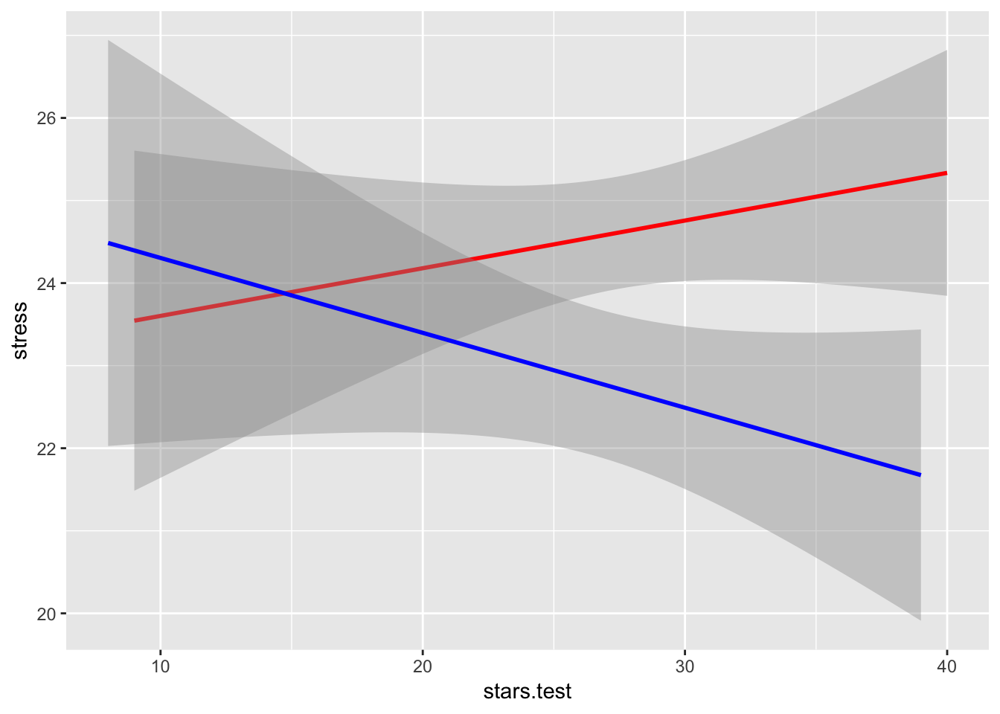

Content
Before we begin…
Remember, whenever we analyse data, we will roughly be following this procedure:
- Clean the data for analysis.
- Run the statistical test.
- Plot the data.
- Write-up analysis.
We will be using the following packages. If this is your first time using these packages, then remember to install them in R.
library(tidyverse)
library(broom)
library(lm.beta)
library(mediation)Reminder: Moderation (Interaction Effects)
As covered in the Lecture series, moderation is when the effect of one IV on the DV depends on another IV. How we can test this in a linear regression is to include an interaction effect.
In the example below, we will test the hypothesis that the association between understanding a statistics teacher and stress is moderated by social support. We would predict that anxiety about taking a statistics test would cause high stress, but more so for individuals who do not have good social support.
Regression with Interaction Effect
1. Clean the data for analysis.
First we must calculate the scores for each scale in the analysis from the variables.
For more detail on the Statistic Anxiety Rating Scale (STARS), click here. For more detail on the Perceived Social Support Scale, click here. For more detail on the Stress Scale, click here.
data1.clean <- data %>%
mutate(stars.test = stars.1 + stars.4 + stars.8 + stars.10 + stars.13 + stars.15 + stars.21 + stars.22,
support = support.1 + support.2 + support.3 + support.4 + support.5 + support.6 + support.7 + support.8 + support.9 + support.10 + support.11 + support.12,
stress = stress.1 + stress.2 + stress.3 + stress.4 + stress.5 + stress.6 + stress.7 + stress.8 + stress.9 + stress.10) %>%
dplyr::select(student.no,stars.test,support,stress)When dealing with interaction terms, including uncentered variables can be problematic. In order to center the variables, we first need to get the means for all the variables. To do this, we will use the summarise function:
data1.summary <- summarise(data1.clean,
stars.test_mean = mean(stars.test),
support_mean = mean(support),
stress_mean = mean(stress),
stars.test_sd = sd(stars.test),
support_sd = sd(support),
stress_sd = sd(stress))
data1.summary## stars.test_mean support_mean stress_mean stars.test_sd support_sd
## 1 24.03333 48.83333 19.68333 3.732435 6.926164
## stress_sd
## 1 4.188328#Compute centred variables for unstandardised analysis.
data1.clean <- cbind(data1.clean,data1.summary) %>%
mutate(c.stars.test = stars.test - stars.test_mean,
c.support = support - support_mean,
#Compute standardised variables for standardised analysis.
z.stars.test = (stars.test - stars.test_mean)/stars.test_sd,
z.support = (support - support_mean)/support_sd,
z.stress = (stress - stress_mean)/stress_sd)2. Run statistical test
Recall that interaction effects are the multiplication of the two variable. Therefore, to specify an interaction, we include the multiplication of the variable whose interaction we are interested in. Make sure you include the centred variables in the formula.
#Unstandardised Model
model1 <- lm(stress ~ c.stars.test*c.support,data = data1.clean)
summary(model1)##
## Call:
## lm(formula = stress ~ c.stars.test * c.support, data = data1.clean)
##
## Residuals:
## Min 1Q Median 3Q Max
## -9.529 -2.735 0.079 2.562 8.602
##
## Coefficients:
## Estimate Std. Error t value Pr(>|t|)
## (Intercept) 19.692466 0.547713 35.954 <2e-16 ***
## c.stars.test 0.209624 0.147912 1.417 0.162
## c.support -0.066544 0.083457 -0.797 0.429
## c.stars.test:c.support -0.002957 0.022232 -0.133 0.895
## ---
## Signif. codes: 0 '***' 0.001 '**' 0.01 '*' 0.05 '.' 0.1 ' ' 1
##
## Residual standard error: 4.209 on 56 degrees of freedom
## Multiple R-squared: 0.04141, Adjusted R-squared: -0.009938
## F-statistic: 0.8065 on 3 and 56 DF, p-value: 0.4956Notice how R automatically includes the main effects in the model? In most cases, you will want to include the separate main effects when including an interaction term, but in the odd occassion when you want to include the interaction effect without the main effect, you can specify it using the : symbol. In other words:
stress ~ stars.test*support is identical to stress ~ stars.test + support + stars.test:support
Above are the unstandardised coefficients. In order to report in APA format, we require the standardised coefficient. Similar to with an ordinary regression, we can use the lm.beta() function to get the standardised coefficients, like here:
#Standardised Model
lm.beta(model1) %>% summary()##
## Call:
## lm(formula = stress ~ c.stars.test * c.support, data = data1.clean)
##
## Residuals:
## Min 1Q Median 3Q Max
## -9.529 -2.735 0.079 2.562 8.602
##
## Coefficients:
## Estimate Standardized Std. Error t value Pr(>|t|)
## (Intercept) 19.692466 0.000000 0.547713 35.954 <2e-16
## c.stars.test 0.209624 0.186807 0.147912 1.417 0.162
## c.support -0.066544 -0.110043 0.083457 -0.797 0.429
## c.stars.test:c.support -0.002957 -0.018234 0.022232 -0.133 0.895
##
## (Intercept) ***
## c.stars.test
## c.support
## c.stars.test:c.support
## ---
## Signif. codes: 0 '***' 0.001 '**' 0.01 '*' 0.05 '.' 0.1 ' ' 1
##
## Residual standard error: 4.209 on 56 degrees of freedom
## Multiple R-squared: 0.04141, Adjusted R-squared: -0.009938
## F-statistic: 0.8065 on 3 and 56 DF, p-value: 0.49563. Plot data
Interactions can often be difficult to intuit from just looking at the numbers in the model. Therefore, it is almost always necessary to plot them. The most common way to plot an interaction is to split the dataset in two according to the moderator: one with participants who score above the mean on the moderator, and the other with participants who score below the mean on the moderator. In our example, this means splitting the data into participants who are above and below the mean in social support. We can do this using the filter() function:
plot.data_modhigh <- filter(data1.clean,z.support > 0)
plot.data_modlow <- filter(data1.clean,z.support < 0)Since we standardised the moderator during the cleaning scale. The mean = 0, so we can split the data on this.
We then plot the regression line for “high support” (red), and “low support” (blue) separately. This is done by adding two separate geom_smooth() geoms. In each, we specify a different data.frame.
ggplot(mapping = aes(x = stars.test,y = stress)) +
geom_smooth(data = plot.data_modhigh,method = "glm",colour = "red") +
geom_smooth(data = plot.data_modlow, method = "glm",colour = "blue")
Even better is if can visualise the raw data in a scatterplot:
ggplot(data = data1.clean,mapping = aes(x = stars.test,y = stress)) +
geom_point(aes(colour = support)) +
geom_smooth(data = plot.data_modhigh,method = "glm",colour = "red") +
geom_smooth(data = plot.data_modlow, method = "glm",colour = "blue") +
scale_colour_gradient(low = "blue",high = "red")4. Write-up analysis.
Given that a moderation is exactly the same as a regression, we require the same information to do the write-up. As a reminder, here are the components you need to write up a regression:
For the model, you need the following information: * the R-squared statistic. * the F-statistic and associated degrees of freedom. * the and p-value for the model.
For each predictor, you need the following information: * the standardised coefficient. * the t-statistic. * the p-value for that coefficient.
As mentioned last week, with more than one predictor in the model, it may make more sense to report the statistics in a table. This includes models with interaction effects (in the case above, the interaction effect is our third predictor).
Here is an example of the write-up:
We used a linear regression to predict stress from the anxiety about taking a statistics test, level of social support, and the interaction between the two. We found that model explained 4.14% of the variance (F(3,56) = 0.81, p = 0.496). Regression coefficients are reported in Table 1. There was no significant main effect of teaching comprehension on stress. There was no significant main effect of perceived social support on stress. The interaction between comprehension of statistics teacher and level of social support was not significant.
Table 1. Regression coefficients for linear model predicting stress.
| predictor | beta | t | p-value |
|---|---|---|---|
| Teacher Comprehension | 0.21 | 1.42 | 0.16 |
| Social Support | -0.07 | -0.8 | 0.43 |
| TC * SS | 0 | -0.13 | 0.89 |
Mediation
As covered in the Lecture series, mediation describes a relationship where the influence of one variable on another can be explained through a third variable. In the example below, we will test whether the relationship between statistics teacher comprehension and stress can be explained through individual’s anxiety about taking statistics test (i.e., individuals who find statistics teachers hard to understand increase their anxiety about taking statistics tests, which in turn increases stress).
1. Clean data for analysis.
data2.clean <- data %>%
mutate(teacher = stars.30 + stars.32 + stars.43 + stars.44 + stars.46,
support = support.1 + support.2 + support.3 + support.4 + support.5 + support.6 + support.7 + support.8 + support.9 + support.10 + support.11 + support.12,
stress = stress.1 + stress.2 + stress.3 + stress.4 + stress.5 + stress.6 + stress.7 + stress.8 + stress.9 + stress.10,
stars.test = stars.1 + stars.4 + stars.8 + stars.10 + stars.13 + stars.15 + stars.21 + stars.22) %>%
dplyr::select(student.no,teacher,support,stars.test,stress)2. Run statistical test
Remember, mediation is when the effect of one IV could be explained through a third variable (mediation). If effect is there without mediator in model, but is reduced (or disappears) when the mediator is included, there is a chance the mediation is happening. An example of this is below.
Here we test whether there is an association between the predictor and the outcome variable:
model.y <- lm(stress ~ teacher,data = data2.clean)
summary(model.y)##
## Call:
## lm(formula = stress ~ teacher, data = data2.clean)
##
## Residuals:
## Min 1Q Median 3Q Max
## -10.6601 -3.3075 0.1407 2.7393 8.3399
##
## Coefficients:
## Estimate Std. Error t value Pr(>|t|)
## (Intercept) 16.6723 2.8292 5.893 2.05e-07 ***
## teacher 0.1992 0.1837 1.084 0.283
## ---
## Signif. codes: 0 '***' 0.001 '**' 0.01 '*' 0.05 '.' 0.1 ' ' 1
##
## Residual standard error: 4.182 on 58 degrees of freedom
## Multiple R-squared: 0.01986, Adjusted R-squared: 0.002966
## F-statistic: 1.176 on 1 and 58 DF, p-value: 0.2828Here we test whether including the mediator in the model changes the relationship between the predictor and the outcome variable:
model.y2 <- lm(stress ~ teacher + stars.test,data = data2.clean)
summary(model.y2)##
## Call:
## lm(formula = stress ~ teacher + stars.test, data = data2.clean)
##
## Residuals:
## Min 1Q Median 3Q Max
## -10.1020 -3.0261 0.2133 2.7268 7.9776
##
## Coefficients:
## Estimate Std. Error t value Pr(>|t|)
## (Intercept) 12.4973 4.3298 2.886 0.0055 **
## teacher 0.1818 0.1833 0.992 0.3254
## stars.test 0.1846 0.1455 1.269 0.2096
## ---
## Signif. codes: 0 '***' 0.001 '**' 0.01 '*' 0.05 '.' 0.1 ' ' 1
##
## Residual standard error: 4.16 on 57 degrees of freedom
## Multiple R-squared: 0.04679, Adjusted R-squared: 0.01334
## F-statistic: 1.399 on 2 and 57 DF, p-value: 0.2552Also, in order for there to be a mediation, we must observe a relationship between the predictor and the mediator:
model.m <- lm(stars.test ~ teacher,data = data2.clean)
summary(model.m)##
## Call:
## lm(formula = stars.test ~ teacher, data = data2.clean)
##
## Residuals:
## Min 1Q Median 3Q Max
## -7.9282 -2.4135 -0.5224 1.9071 9.1659
##
## Coefficients:
## Estimate Std. Error t value Pr(>|t|)
## (Intercept) 22.61069 2.53956 8.903 1.91e-12 ***
## teacher 0.09411 0.16491 0.571 0.57
## ---
## Signif. codes: 0 '***' 0.001 '**' 0.01 '*' 0.05 '.' 0.1 ' ' 1
##
## Residual standard error: 3.754 on 58 degrees of freedom
## Multiple R-squared: 0.005584, Adjusted R-squared: -0.01156
## F-statistic: 0.3257 on 1 and 58 DF, p-value: 0.5704While we may or may not meet the conditions for a mediation above, we will continue with the analysis to demonstrate the process.
In order to conduct a mediation analysis in R, we will load the medation package, which can test for a mediation via bootstrapping. If you haven’t installed the mediation package yet, run the following code:
install.packages("mediation")Otherwise (or afterwards), load the mediation package:
library(mediation)The function that runs the mediation analysis is aptly named mediate(). If you read the documentation for this function using help(mediate), you will see this function takes two mandatory arguments: model.m and model.y, as well as a whole list of other arguments that have defaults. For now, we will go with the defaults.
The model.m argument is a model where the IV predicts the mediator. The model.y argument is a model where both the iv and mediator predict the dv. As it so happens, we have already created both these models in running the checks above!
By plugging both these into the mediate() function, and giving additional arguments that tell it the names of the IV (called treat here) and the mediator, it will run the simulations and tell us the proportion mediated.
For full documentation of the mediate() function, read help(mediate) and help(summary.mediate).
med.model <- mediate(model.y2,model.m,treat = "teacher",mediator = "stars.test")
summary(med.model)##
## Causal Mediation Analysis
##
## Quasi-Bayesian Confidence Intervals
##
## Estimate 95% CI Lower 95% CI Upper p-value
## ACME 0.000 0.000 0.00 1.00
## ADE 0.093 -0.232 0.42 0.55
## Total Effect 0.093 -0.232 0.42 0.55
## Prop. Mediated 0.000 0.000 0.00 1.00
##
## Sample Size Used: 60
##
##
## Simulations: 1000In the table above, ACME refers to the mediation effect, ADE refers to the direct effect, Total Effect refers to the size of both the mediation and direct effect together, while the Prop. Mediated refers to the Proprotion of the total effect that could be explained by mediation. Note that conducting a mediation analysis this way requires resampling of the data - as such, the exact numbers may vary slightly depending on randomness. As long as there are no issues with the data though, the numbers should all be fairly similar.
The range between the 95% Confidence Intervals (CI) refers to the range you could expect the estimate to fall within if you were to repeat your experiment 100 times given your data, design, and analysis. If the range between the CIs does not contain zero, then your effect is significant.
3. Plot data
Path Diagram
For mediation, there’s no good way to plot the raw data that visualises the mediation. The most common way to visualise a mediated effect is through a path diagram. You do not need ggplot2 to do this, for instance:
Image currently unavailable.
In Workbook 9, we will learn a function that can make some crude path diagrams through running a mediation via the lavaan package.
Forrest Plot
Another (uncommon) way to visualise a mediation is by using a forrest plot. Forrest plots show the estimates of a given model and their standard errors. See if you can follow the code below - there are some quite advanced things happening here, so do not be concerned if you don’t understand what everything does.
plot.y.model <- model.y %>%
tidy() %>%
mutate(se_low = estimate - std.error,
se_high = estimate + std.error,
model = "Model without Mediator") %>%
dplyr::select(term,estimate,std.error,se_low,se_high,model)
plot.y2.model <- model.y2 %>%
tidy() %>%
mutate(se_low = estimate - std.error,
se_high = estimate + std.error,
model = "Model with Mediator") %>%
dplyr::select(term,estimate,std.error,se_low,se_high,model)
plot.data <- rbind(plot.y.model,plot.y2.model)
ggplot(data = plot.data,aes(x = term,y = estimate,ymin = se_low,ymax = se_high,colour = model)) +
geom_pointrange(
size = .5,
position = position_dodge(.3)) +
geom_hline(yintercept = 0) +
coord_flip()4. Write-up analysis.
Here is an example of a write-up for the mediation analysis above:
A mediation analysis is reported in Table 2. We found that anxiety related to taking a statistics test did not significantly mediate the relationship between comprehension of statistics teachers and stress.
Table 2. Causal Mediation Analysis testing the mediating effect of anxiety related to taking a statistics test on the relationship between comprehension of statistics teachers and stress.
|Estimate (95% CI) |p-value————————|——————————————————————|——————– Average Mediated Effect |0 (0, 0) |1 Average Direct Effect |0.09 (-0.23, 0.42) |0.55 Total Effect |0.09 (-0.23, 0.42) |0.55 Proportion Mediated |0 (0, 0) |1